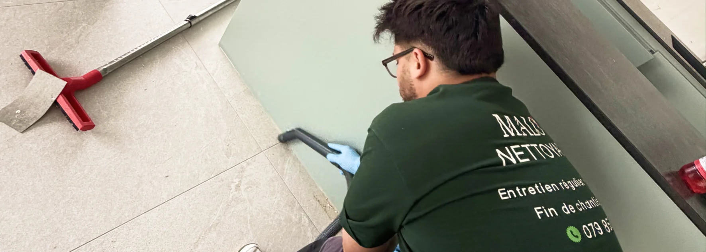

- Zone couverte : Broye fribourgeoise, district du Lac, Fribourg-ville et environs
- Spécificités chantier : voile de ciment, poussière fine, résidus de colle, peinture
- Fourchettes : 5 à 9 CHF/m² selon état et type de chantier
- Délai : réponse sous 24h, intervention planifiée selon avancement du chantier
- Coordination : avec artisans, maîtres d'ouvrage et régies
Ce qui rend un chantier fribourgeois spécifique
Le canton de Fribourg connaît une activité de construction et de rénovation soutenue — immeubles résidentiels dans la Broye, fermes rénovées dans le district du Lac, projets commerciaux à Fribourg-ville. Chaque type de chantier laisse des résidus différents qui demandent une approche adaptée.
La poussière de construction est le résidu le plus commun et le plus difficile à éliminer complètement. Contrairement à la poussière domestique, elle contient des particules minérales fines (plâtre, ciment, béton) qui s'incrustent dans les revêtements de sol, les joints et les surfaces poreuses.
Le voile de ciment apparaît systématiquement après la pose de carrelage. Invisible à l'œil sec, il devient opaque une fois humidifié et colle progressivement aux surfaces s'il n'est pas traité rapidement avec les bons produits.
Les résidus de peinture sur vitres, poignées et plinthes sont presque inévitables sur tout chantier, même bien protégé.
Un chantier à nettoyer dans le canton de Fribourg ?
Résidus, voile de ciment, poussière fine · Broye FR & environs · Devis en 24h
Voir le service fin de chantier →Les prestations couvertes dans le canton de Fribourg
Un nettoyage fin de chantier complet couvre l'ensemble des surfaces et zones affectées par les travaux.
Sols
- Aspiration de la poussière fine (aspirateur HEPA)
- Élimination du voile de ciment sur carrelage
- Nettoyage et protection du parquet posé
- Traitement des plinthes et joints
Murs et plafonds
- Dépoussiérage complet des surfaces
- Élimination des traces d'outils et projections
- Nettoyage des interrupteurs, prises et plafonniers
Sanitaires et cuisine
- Désinfection complète WC, lavabos, douche ou baignoire
- Détartrage de la robinetterie neuve (résidus de chantier)
- Nettoyage de l'évier, plan de travail, hotte
Vitres et menuiseries
- Nettoyage des vitres intérieures et extérieures (traces de peinture, étiquettes)
- Nettoyage des cadres et des rainures
- Élimination des résidus de silicone ou de colle sur les vitrages
Extérieurs immédiats
- Nettoyage des accès (entrée, escalier extérieur)
- Évacuation des déchets résiduels laissés sur place

Combien coûte un nettoyage fin de chantier à Fribourg
Les tarifs pratiqués dans le canton de Fribourg sont alignés sur ceux de la Broye vaudoise. Voici les fourchettes indicatives.
| Type de chantier | Surface | Fourchette indicative |
|---|---|---|
| Appartement rénové | Jusqu'à 80 m² | 400 – 700 CHF |
| Appartement rénové | 80 à 150 m² | 700 – 1'200 CHF |
| Maison individuelle rénovée | 150 à 300 m² | 1'200 – 2'500 CHF |
| Construction neuve | Selon surface | 5 – 9 CHF/m² |
| Local commercial | Selon surface et état | Sur devis |
Les zones couvertes dans le canton de Fribourg
Malo Nettoyage intervient depuis Payerne dans l'ensemble de la Broye fribourgeoise et dans les communes voisines du canton.
Broye fribourgeoise
Estavayer-le-Lac, Domdidier, Belmont-Broye (Dompierre, Léchelles, Russy), Saint-Aubin (FR), Cheyres-Châbles, Delley-Portalban, Gletterens, Vallon, Cugy (FR), Nuvilly, Sévaz, Lully, Châtillon (FR).
District du Lac (Seebezirk)
Murten (Morat), Courtepin, Misery-Courtion, Cressier (FR), Gurmels, Bas-Vully, Haut-Vully.
Fribourg et environs
Fribourg-ville et communes périphériques selon volume et nature du chantier (Givisiez, Granges-Paccot, Matran, Villars-sur-Glâne).
Pourquoi le timing est crucial sur un chantier
C'est le point que beaucoup de maîtres d'ouvrage sous-estiment. Un nettoyage fin de chantier n'est pas une simple corvée de ménage — c'est une intervention technique qui doit s'insérer précisément dans le planning de chantier.
Trop tôt : si des artisans repassent après le nettoyage (électricien, plombier, peintre), tout est à refaire. Le surcoût est souvent supérieur au coût initial.
Trop tard : le voile de ciment séché depuis plusieurs semaines est beaucoup plus difficile à éliminer. Certains résidus s'incrustent définitivement dans les joints ou les revêtements.
Le bon moment : après le dernier artisan, avant la remise des clés ou la livraison. Idéalement, nous visitons le chantier en fin de semaine pour intervenir le lundi matin.
Nous coordonnons régulièrement avec les maîtres d'ouvrage, les entreprises générales et les régies fribourgeoises pour planifier l'intervention au bon moment.
Nettoyage fin de chantier et remise à la régie dans le canton de Fribourg
Un cas fréquent dans la Broye fribourgeoise : un locataire rénove son logement et doit le remettre en état avant la fin du bail, ou un propriétaire livre un bien rénové à une régie.
Dans ces situations, les exigences sont doubles :
- Le nettoyage doit répondre aux standards d'un nettoyage fin de chantier (élimination des résidus de construction)
- ET aux standards d'un nettoyage fin de bail (état irréprochable pour l'état des lieux)
Nous intervenons régulièrement sur ce type de prestation combinée dans le canton de Fribourg, avec une garantie de résultat pour l'état des lieux.
FAQ – Nettoyage fin de chantier à Fribourg
Malo Nettoyage intervient-il sur les chantiers dans tout le canton de Fribourg ?
Oui, dans la Broye fribourgeoise sans frais supplémentaires. Pour les chantiers situés à Fribourg-ville ou dans d'autres districts du canton, nous intervenons selon la nature et le volume du chantier. Contactez-nous avec les détails de votre projet pour une réponse rapide.
Combien de temps prend un nettoyage fin de chantier ?
Pour un appartement rénové standard (80 à 150 m²), comptez 1 à 2 jours. Pour une maison individuelle complète, 2 à 4 jours selon l'état. Pour une construction neuve, la durée dépend de la surface et du type de finitions. Nous établissons une estimation précise lors du devis.
Faut-il fournir de l'eau et de l'électricité sur le chantier ?
Oui. Nos équipes ont besoin d'un accès à l'eau courante et à une prise électrique pour les aspirateurs et le matériel de nettoyage. Si le chantier n'a pas encore d'eau ou d'électricité, signalez-le lors du devis pour qu'on puisse adapter l'intervention.
Le nettoyage fin de chantier inclut-il l'évacuation des déchets de construction ?
Non, pas systématiquement. Le nettoyage fin de chantier traite les résidus fins (poussière, voile de ciment, traces de peinture). L'évacuation des gravats, matériaux de démolition ou encombrants est une prestation de débarras distincte. Si vous avez besoin des deux, nous pouvons coordonner avec Malo Débarras pour une intervention combinée.
Peut-on combiner nettoyage fin de chantier et fin de bail dans le canton de Fribourg ?
Oui, et c'est souvent la solution la plus efficace. Pour un logement rénové à remettre à une régie, nous intervenons en une seule prestation combinée : nettoyage des résidus de construction + nettoyage fin de bail aux standards des régies fribourgeoises. Un seul devis, un seul planning.
En résumé
Le nettoyage fin de chantier dans le canton de Fribourg demande une méthode adaptée aux résidus spécifiques de construction (voile de ciment, poussière fine, résidus de peinture) et un timing précis dans le planning de chantier. Malo Nettoyage intervient dans toute la Broye fribourgeoise depuis Payerne, avec des tarifs transparents (5 à 9 CHF/m² pour une construction neuve) et une coordination possible avec les maîtres d'ouvrage et les régies fribourgeoises.